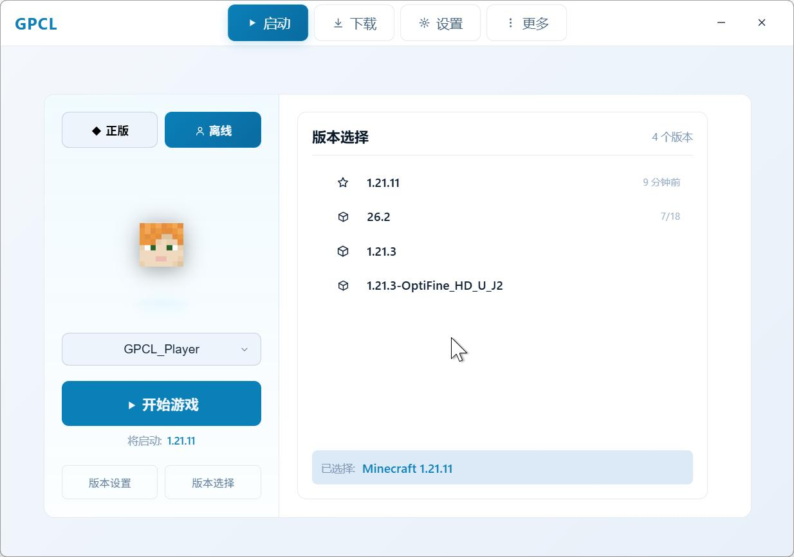
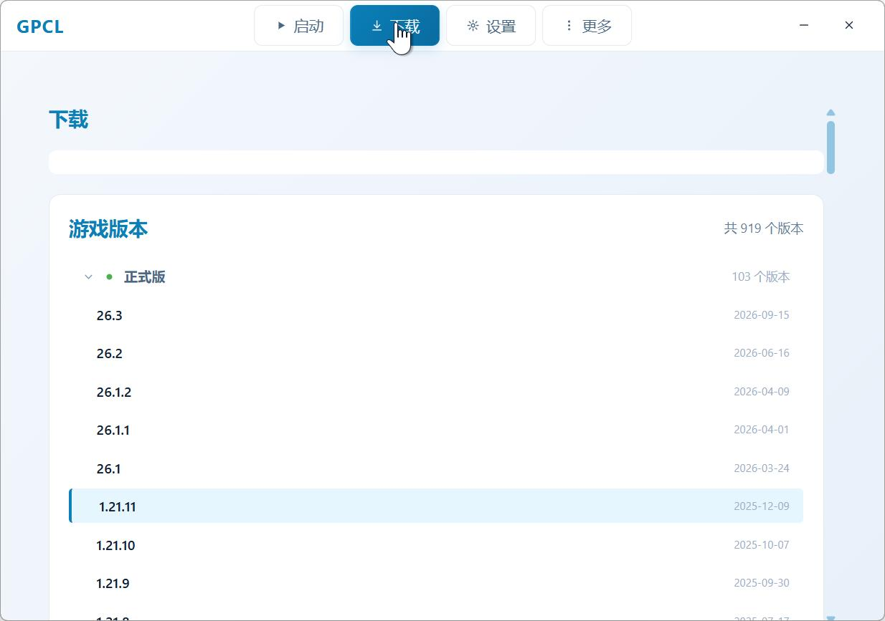
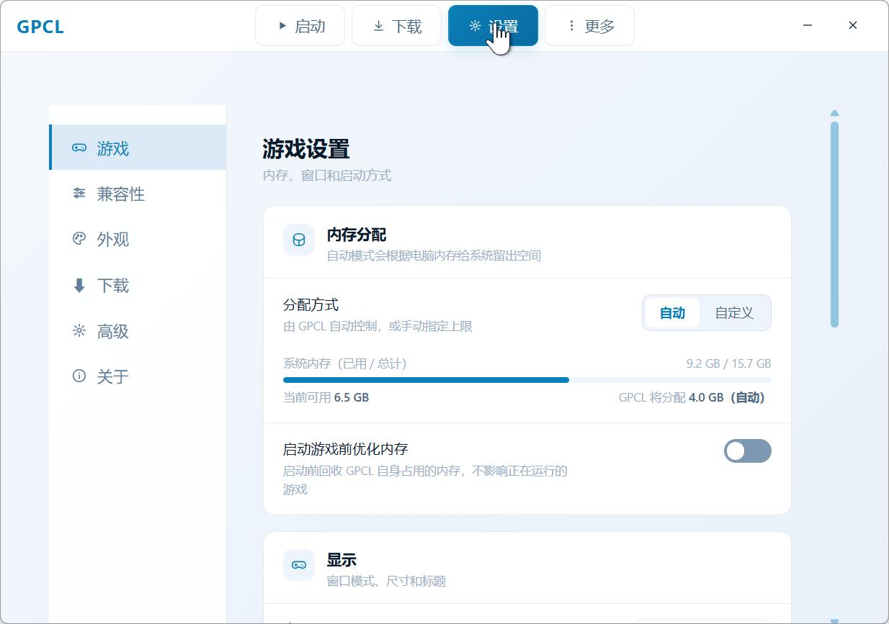

GoodPlanCraftLauncher
轻量 · 高效 · 开源
一个为 Windows 写的 Minecraft 启动器：微软正版与离线双模式登录、版本管理、Forge / Fabric / OptiFine 一键安装， Java 环境自动补全。崩溃了会告诉你为什么，而不是只弹一个白框。
上面这个窗口是能点的——它就是启动器的界面，在网页里跑了一遍。
轻量 · 高效 · 开源
一个为 Windows 写的 Minecraft 启动器：微软正版与离线双模式登录、版本管理、Forge / Fabric / OptiFine 一键安装， Java 环境自动补全。崩溃了会告诉你为什么，而不是只弹一个白框。
上面这个窗口是能点的——它就是启动器的界面，在网页里跑了一遍。
为玩家打造的实用工具，每一项都为「更快进入游戏」服务
支持 Microsoft 正版登录与离线登录，随时切换；离线模式不需要联网验证。
一键下载、安装、切换 Minecraft 各版本，自动处理依赖库与资源文件。
优化的启动流程与缓存机制，点击即玩，告别漫长等待。
自动检测并补全 Java 运行环境，下载源可在清华、南大、华为云、官方之间切换，失败自动换下一个。
完整支持浅色模式与深色模式，界面缩放可调，提供一致的视觉体验。
内置更新检测机制，支持可配置的日志自动清理策略，保持启动器长期整洁高效。
游戏异常退出时说明原因，可一键导出错误报告（崩溃报告 + 日志 + 系统信息）。
游戏启动后右侧显示版本、PID、运行时长、内存占用，随时能结束游戏。
游戏窗口标题可以自己写，支持 {mc_version}、{time} 等魔术字。
页面顶上的窗口是按启动器界面在网页里复刻的，不用装就能点。下面这四张是启动器在 Windows 上实际跑出来的样子，没修图。



选择你的平台，开始方块冒险
不高，但值得知道
Windows 10 64 位（1709+），Windows 11 同样兼容
启动器自动补全；建议手动清理系统中冗余或冲突的 Java 文件
启动器本体至少 90 MB 可用空间（不含游戏本体）
建议 2 GB 以上可用内存
采用 CaelLab BY-SA Code License, Version 3（或任何更新版本）授权。可自由使用、修改、分发，修改版必须保持相同开源许可。项目主页：gamets.caellab.com/gpcl。
查看许可证全文 →
Copyright (c) 2026 Yunyun(云云) By 虚舟实验室(CaelLab) / CaelLabGameTS
Licensed under the CaelLab BY-SA Code License, Version 3
or any later version. https://www.caellab.com/license/cbs-v3.txt
You are free to:
Share — copy and redistribute the source code and the compiled
output in any medium or format.
Adapt — remix, transform, and build upon the work.
Use commercially — for personal, commercial, or non-commercial purposes.
Run it privately — including on your own servers, without publishing
your changes.
Under the following terms:
Attribution (BY) — keep the copyright notice, credit the author, link to
this license, and state whether you made changes.
ShareAlike (SA) — derivatives must be distributed under this license or a
later version of it, with no additional restrictions.
Source code — if you distribute the work in built form, the complete
corresponding source must be made available.
No trademark — you may not use the "CaelLab" name to endorse your
version.
THE WORK IS PROVIDED "AS IS", WITHOUT WARRANTY OF ANY KIND, EXPRESS OR
IMPLIED, INCLUDING BUT NOT LIMITED TO THE WARRANTIES OF MERCHANTABILITY,
FITNESS FOR A PARTICULAR PURPOSE AND NONINFRINGEMENT.
查看过往版本与更新记录